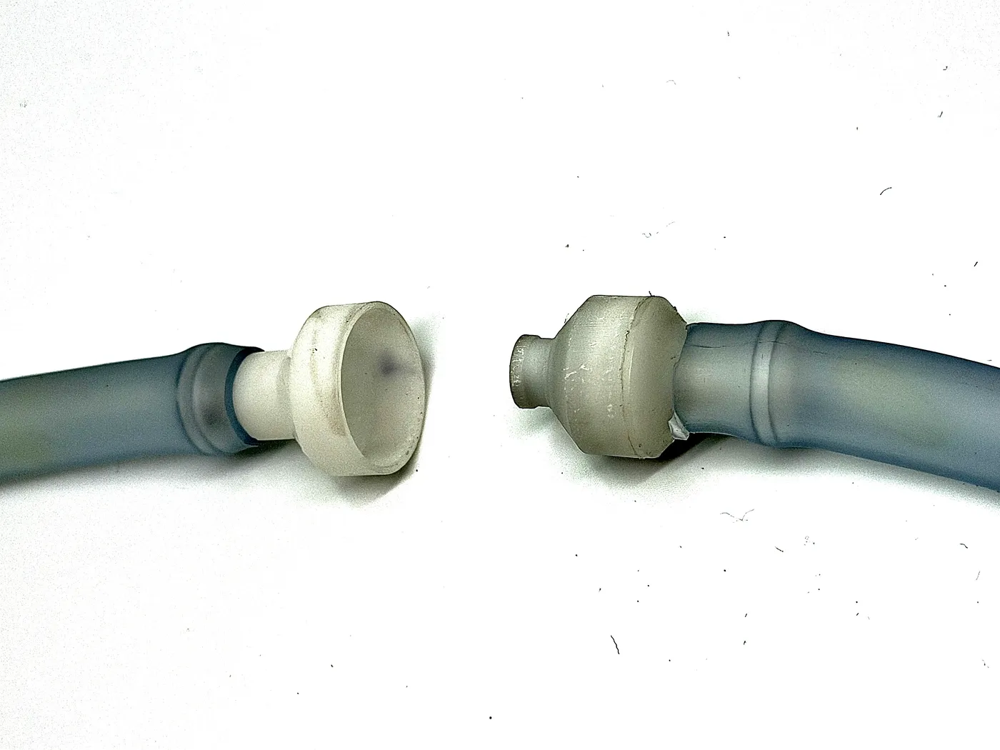

PhilaeTube: a chest tube dislodgment prevention system
- Problem
- Chest tubes in critical care patients are often dislodged, which can cause tension pneumothorax, hemothorax, and infection. Sutures alone don't reliably keep them in place.
- My role
- I coordinated with WISER during need-finding, then became design lead for the one-way valve at the breakaway joint. I wrote its specifications, risk analysis, and V&V plan.
- Approach
- We started with ethnography and task analysis, then built low-resolution prototypes, then PLA and resin prints. After informal testing showed retrograde flow, I proposed a laser-cut silicone valve sewn in place.
- With
- My senior design team, including A. Kulkarni, R. Deepak, and M. Sun.